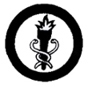

Public Health
- Tell the main cause of the following diseases, and how to prevent them: tuberculosis, typhoid fever, diphtheria, malaria, hookworm, tetanus (lockjaw), and rabies.
- Do the following:
- Make a bait and set a mouse trap. Catch a live mouse to show that the trap works.
- Improvise a fly swatter. Name two or more diseases known to be carried by flies from one person to another.
- Describe two or more methods of destroying the breeding places of mosquitoes. Know at least the name of a modern insecticide and how it is used to destroy flies, mosquitoes, and other harmful insects.
- Destroy completely two kilograms of "green garbage" over the embers of an outdoor cooking fire.
- Do the following:
- Explain what health requirements your community enforces in the sale of meat, fish, fruits, vegetables, and cooked food.
- Tell how can you cooperate with the health authorities in preventing diseases in your home and community.
- Give five simple rules for preventing the spread of communicable diseases during and following a person's illness.
- Do the following:
- Dig a straddle trench latrine and 'cat-hole' latrine. Fill in and leave in proper condition.
- Present a diagram of an "Antipolo"-type or some other type of sanitary toilet for home use. Help construct one in your own home if necessary.
- Explain two purposes of physical "recheck" examination given to Scouts by a medical doctor when they arrive in a Council camp.
- Filter one full canteen of muddy water using materials you carry or can find in camp.
- Make one-half of the water safe by using a suitable chemical, and the other by the use of heat.
- Name some diseases against which you have been immunized by vaccination or other methods, and explain how the immunization works. Tell what vaccine is given to persons going abroad.
|